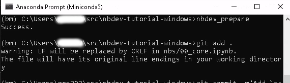
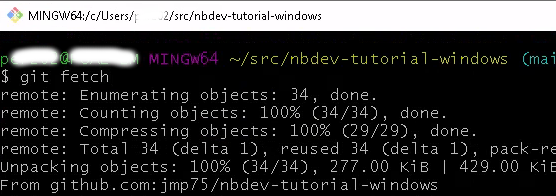

This post is a follow up on Using nbdev on Windows, which explains the motivation for assessing how nbdev works on Windows, natively (i.e. not from a unix emulation or WSL).
The author of these lines is a near exclusive Linux user, so I am not posting this to advocate for Windows. This is because I have many colleagues who may consider using nbdev but for whom, based on past experience, adoption is much more likely if it is natively working on Windows.
Walkthrough
The nbdev tutorial section has an end to end walkthrough, which is an ideal starting point to test if there are any bugs on Windows native when using nbdev.
Prerequisites
See the nbdev install instructions for reference, but “ignore” the advice it does not work on windows “cmd”. See the nbdev walkthrough installation.
For this post:
- if you use pip and venv:
- A virtual environment set up with
pipandvenv, withnbdev
- A virtual environment set up with
- if you use conda:
- Miniconda3 (or anaconda3) for Windows installed
- A conda environment set up, but with
nbdevand 3 other packages from the fastai stable set up with pip, as described in Using nbdev on Windows part 1. Jupyter notebooks (or lab).
- git for windows installed:
where gitsucceeds in locating git from a CMD prompt - Install Quarto, preferably from the Quarto web site unless you know you have a recent enough version already.
Most commands in this post, notably nbdev_* commands, are run from a miniconda terminal prompt (CMD) on Windows, unless otherwise stated. I am deliberately not adding a path to a MinGW (Minimalist GNU for Windows) folder. It has unix commands I dearly miss, but the purpose of this post is to detect features not working for a typical Windows user.

Using Windows powershell is not tested in the present post.
I am executing the git clone, git push and similar commands from a git bash prompt rather than the Miniconda3 CMD prompt used for all other commands. This is because I know how to relatively easily set up SSH authentication with eval `ssh-agent -s`, ssh-add and then all git commands interacting with the github remote just work. There are ways to set that up natively on Windows, I believe.

Starting the walkthrough
We create the skeleton with the following command. Let’s use a custom package name from your activated conda (resp virtual) environment.
After cloning the empty repository from github:
nbdev_new --lib_name winbdevwhich outputs the following. There are a few odd characters, but this is probably of no consequence.
UserWarning: Neither GITHUB_TOKEN nor GITHUB_JWT_TOKEN found: running as unauthenticated
else: warn('Neither GITHUB_TOKEN nor GITHUB_JWT_TOKEN found: running as unauthenticated')
←[94mrepo←[39m = nbdev-tutorial-windows # Automatically inferred from git
←[94mbranch←[39m = main # Automatically inferred from git
←[94muser←[39m = jmp75 # Automatically inferred from git
←[94mauthor←[39m = J-M # Automatically inferred from git
←[94mauthor_email←[39m = abcdef@csiro.au # Automatically inferred from git
←[94mdescription←[39m = Test nbdev when used natively on Windows. # Automatically inferred from git
settings.ini created.
pandoc -o README.md
to: gfm+footnotes+tex_math_dollars-yaml_metadata_block
output-file: index.html
standalone: true
default-image-extension: png
metadata
description: Test nbdev when used natively on Windows.
title: nbdev-tutorial-windows
Output created: _docs\README.mdCheck the created files and directories, and it seems to be as expected. I am a bit surprised the package folder name is not winbdev as per the custom package name, but this later showed to all work as expected.
| File/Dir |
|---|
.github/ |
.gitignore |
LICENSE |
MANIFEST.in |
nbdev_tutorial_windows/ |
nbs/ |
README.md |
settings.ini |
setup.py |
_proc/ |
Time for the first commit:
where git
git add .A few warnings courtesy of the “carriage return” character, but again not something of real consequence.
warning: LF will be replaced by CRLF in .github/workflows/deploy.yaml.
The file will have its original line endings in your working directorygit commit -m "initial commit"
git push
As mentioned previously, git push and similar commands performed from a git bash prompt
git push
The first action run on Github Actions failed with:
Run import ghapi.core,nbdev.config,sys
Error: Please enable GitHub Pages to publish from the root of the `gh-pages` branch per these instructions - https://docs.github.com/en/pages/getting-started-with-github-pages/configuring-a-publishing-source-for-your-github-pages-site#publishing-from-a-branch
HTTP Error 403: ForbiddenWhile the error message provides a link, follow instead the nbdev instructions for enabling github pages, which say to use gh-page to deploy from. It may be a minor flow in the nbdev walkthrough not to have this section earlier.
The action then succeeds, but upon accessing, I note a
404
File not foundThis may be transient. Anyway, probably nothing specific to working from Windows.
Next, nbdev_install_hooks seems to complete fine reporting that Hooks are installed.
Install your package
If you run the command pip install -e '.[dev]' as per the nbdev documentation you end up with:
ERROR: '.[dev]' is not a valid editable requirement. It should either be a path to a local project or a VCS URL (beginning with bzr+http, bzr+https, bzr+ssh, bzr+sftp, bzr+ftp, bzr+lp, bzr+file, git+http, git+https, git+ssh, git+git, git+file, hg+file, hg+http, hg+https, hg+ssh, hg+static-http, svn+ssh, svn+http, svn+https, svn+svn, svn+file).You’ll want to use double quotes, which works fine: pip install -e ".[dev]"
Preview
Check you have the right location of quarto in the PATH environment variable: where quarto should return a location such as:
C:\Users\abcdef\AppData\Local\Programs\Quarto\bin\quarto.cmd
nbdev_preview seems to work fine for now:

nbdev_prepare
nbdev_prepare returns: success!
minor modification to the git commit message (backticks do not play nice in CMD): git commit -m "Add say hello and some tests". Git actions complete and the web site is up on github pages as expected.
nbdev_preview with added code
After going a bit further into the tutorial (adding the first class, or perhaps a bit before that), I notice in a terminal with a running nbdev_preview:
GET: /core.html
Traceback (most recent call last):
File "C:\Users\abcdef\Miniconda3\envs\bm\lib\site-packages\nbdev\quarto.py", line 278, in _f
try: serve_drv.main(res)
File "C:\Users\abcdef\Miniconda3\envs\bm\lib\site-packages\nbdev\serve_drv.py", line 22, in main
if src.suffix=='.ipynb': exec_nb(src, dst, x)
File "C:\Users\abcdef\Miniconda3\envs\bm\lib\site-packages\nbdev\serve_drv.py", line 15, in exec_nb
nb = read_nb(src)
File "C:\Users\abcdef\Miniconda3\envs\bm\lib\site-packages\execnb\nbio.py", line 57, in read_nb
res = dict2nb(_read_json(path, encoding='utf-8'))
File "C:\Users\abcdef\Miniconda3\envs\bm\lib\site-packages\execnb\nbio.py", line 16, in _read_json
return loads(Path(self).read_text(encoding=encoding, errors=errors))
File "C:\Users\abcdef\Miniconda3\envs\bm\lib\json\__init__.py", line 346, in loads
return _default_decoder.decode(s)
File "C:\Users\abcdef\Miniconda3\envs\bm\lib\json\decoder.py", line 337, in decode
obj, end = self.raw_decode(s, idx=_w(s, 0).end())
File "C:\Users\abcdef\Miniconda3\envs\bm\lib\json\decoder.py", line 355, in raw_decode
raise JSONDecodeError("Expecting value", s, err.value) from None
json.decoder.JSONDecodeError: Expecting value: line 1 column 1 (char 0)This seems not to be a full blocker, as the documentation for the new class seems to show up after a couple of refreshes.
Taking stock
It is possible to go through the tutorial without major issues. There are of course reports of nbdev issues mentioning Windows, some valid, some false flags. Some users are also interested in working from Windows native, such as issue 986.
We certainly got further than reported in this issue (nbdev_new).
The issue with nbdev_preview mentioned in the last section may be a fluke. I have used several nbdev_* commands including nbdev_preview (nbdev v 2.3.7) on a much more substantial work project, and it all seems to work fine so far.